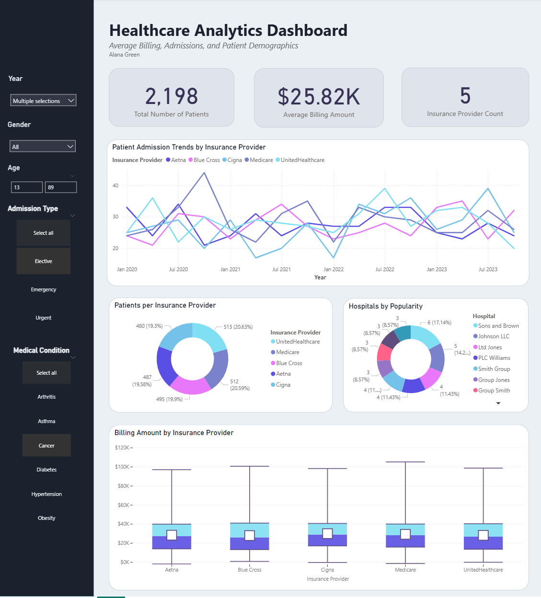

Trend Analysis in Healthcare
Overview
This interactive dashboard was built through Power BI using a synthetic healthcare dataset, mimicking realistic records, including admission details, patient demographics, billing amounts, insurance providers, and more. The original dataset, consisting of more than 10,000 values, was designed to be an ethical alternative of accessing actual patient data, effectively allowing for exploration of vital analytical healthcare topics, like patient trends, cost patterns, and the overall performance of popular providers while abiding by privacy regulations. The purpose of my dashboard is to spread a unique understanding of these vital matters at a glance in the form of an immersive, captivating experience. Healthcare administrators, policy decision-makers, and analysts will find great benefit in studying how gender, age, medical conditions, and billing distributions play a role in client retention and how they would hypothetically compare across different providers.
My Role
In this group project, my role was to create a visual data analysis of healthcare trends where users could manipulate variables to spot insightful connections.
Visualization

Technologies
- Power BI
Process
Preprocessing, data cleaning, etc
Key Features
- slicers
- aesthetics
- graphs
Challenges & What I Learned
challenges
learned
Results
Useful for identifying trends with ease